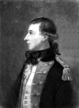

İrlandalı devrimci Theobald Wolfe Tone (1763–1798), 1798 yılındaki İrlanda Devrimi’nin liderlerinden biriydi. Başarısız olmasına rağmen Tone’un isyanı, bir yüzyıl boyunca sürecek ve 1921 yılında İrlanda’nın Büyük Britanya’dan ayrılışı ile son bulacak olan bir dizi politik hareketin fitilini ateşlemiş oldu.

Tone’un İrlanda’nın bağımsızlığına yaptığı katkılar, sonraki liderlerden farklı olarak onun bir Protestan olduğu düşünülürse daha da anlamlı bir hale gelmektedir. İrlanda’nın bağımsızlığını, demokrasiye olan inancı nedeniyle desteklemiştir. Tone’un hayali mezhepler arasında bölünmemiş, özgür bir İrlanda yaratmaktı.
İsyanın bastırılması ve Tone’un ölümünün ardından İrlanda bağımsızlık hareketi dini bir karakter kazanmış, hareket bağımsızlık yanlısı Katoliklerin kralcı Protestanlarla mücadelesi halini almıştır. Tone’un ideali hiçbir zaman hayata geçirilememiştir. Günümüzde Kuzey İrlanda’nın Protestan ağırlıklı bölgeleri Birleşik Krallık’ın bir parçası durumundadır.
Bir araba imalatçısının oğlu olarak Dublin’de dünyaya gelen Tone, Trinity Koleji’nde hukuk okudu. Londra’da kısa bir süre avukatlık yaptı. 1790’ların başında politikaya atılarak Katoliklerin yurttaşlık hakkının tanınması için mücadele verdi. Tone’un radikalizmi, Fransız ve Amerikan devrimlerinden etkilenmişti. Özellikle sıkça okuduğu ve alıntılar yaptığı Thomas Paine’den (1737–1809) ilham alıyordu.
1791 yılında “Birleşik İrlandalılar Topluluğu”nun kurucularından biri oldu. Bu yeraltı topluluğu, kısa sürede yüzbinleri etrafında toplayacaktı. İngilizler 1794 yılında grubu hedef aldılar. Sonraki yıl Tone sürgüne gönderildi. Diğer İrlandalı mültecilerle birlikte Fransa’ya gitti. Bu mülteci topluluğu bir isyan başlatabilmek için uzun yıllar plan yaptı.
Beklenen ayaklanma, 24 Mayıs 1798 tarihinde başladı. Asiler Fransa tarafından destekleniyordu. Ne var ki isyan kısa sürede bastırıldı. İngilizler tarafından yakalanan Tone askeri mahkemede yargılandı ve ölüme mahkum edildi. İdamını beklerken intihar etti.
Ek Bilgiler
1- Tone sürgün edilince 1795 yılında ABD’ye gitti. Bir dönem Philedelphia’da kaldı. Amerika’yı sevmemişti. Özellikle Philedelphia’da yaşamak ona çok pahalı gelmişti. Sonraki yılın başlarında Avrupa’ya geri döndü.
2- “Katolik Özgürleşmesi,” yani Katoliklerin parlamentoya seçilmesini ya da yargıç olmasını yasaklayan kanunların iptali, 1829 yılına kadar gerçekleşmeyen bir hayal olarak kaldı.
3- Tone, İrlanda siyasetine girmeden önce, bugün Hawaii Adası’nın olduğu yerde bir İngiliz askeri üssü kurmak için planlar yapmıştı. Tasarısını başbakan William Pitt’e (1759–1806) bizzat teslim etti. Ancak başbakan bu planı dikkate almadı.